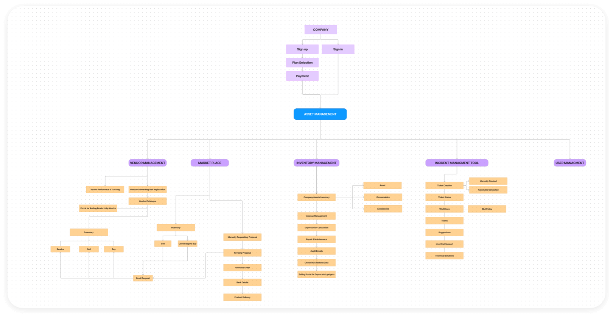

AMS
AMS
Revolutionizing Resource Oversight for Maximum Efficiency
The ultimate solution for managing the employee and the assets.
Getting started
Manage your Asset
In today's dynamic business environment, efficient asset management is crucial for organizations to optimize resource utilization, reduce operational costs, and mitigate risks. This case study explores how AMS, a comprehensive asset management system, revolutionized the asset management processes of Maren Soulution Pvt Ltd
The Challenge
Before implementing AMS, Maren faced numerous challenges in managing its extensive portfolio of assets. Manual tracking methods, spreadsheets, and disparate systems led to inefficiencies, inaccuracies, and difficulties in asset visibility, resulting in suboptimal asset utilization and increased risk of asset loss or theft. Additionally, compliance with regulatory requirements and auditing processes posed significant challenges due to the lack of a centralized and automated asset management solution.
1.
Tracking of assets and manging the assigned emplyee
2.
Asset depreciation and calculating the budget
While doing any kind of design, we have to consider the people who is not much in to technology. Son educate them properly in our procedures.
Learnings
To manage everything we have to buld a comprehensive solution which will do the tracking, monitoring, and managing assets throughout their lifecycle. AMS leveraged advanced features such as depreciation and managing the value of a product and up-to-date information on asset location, status, and usage. Moreover, the system offered customizable workflows, automated notifications, and compliance management capabilities to streamline asset-related processes and ensure adherence to regulatory standards.
My Role
My role for this project started from the business idea as it came from the discussion with me and the main stakeholder. I led the Product Design - User Experience (UX) and User Interface (UI) - of this project end to end.
Design process
The first step of the design process involved user interviews and desk research to understand how competitors and users behave. I believe it’s important to get this information early on in the process, before having an idea or prototyping.
After analysing this insights, I began to conceptualize the solution, focusing on user flows and wireframe to give me a way to iterate faster through ideas. From this, From this, I went to the production mode, designing the interface considering design principles such as contrast, hierarchy and feedback; brand attributes; user interactions, and the imagistic universe presented as briefing by the case.
Research
Unveiling Insights
In this user-centric interview, we delve into the intricacies of asset management through the eyes of those who navigate its challenges daily. Through candid conversations stakeholders and office system admins, we aim to uncover valuable insights, perspectives, and pain points that shape the landscape of asset management solutions.
What are the key challenges you face in managing assets within your organization?
How do you currently track and monitor assets throughout their lifecycle?
What features or functionalities would you prioritize in an ideal asset management system?
Can you share any specific instances where inefficient asset management processes hindered your workflow?
Can you share any specific instances where inefficient asset management processes hindered your workflow?
Are there any specific scenarios in which you would use this app?
In your opinion, what would constitute an effective asset management solution?
How do you envision an ideal asset management system improving your daily operations and overall efficiency?
Through this insightful interview, we gain valuable perspectives and firsthand experiences that illuminate the evolving landscape of asset management. By prioritizing user needs, addressing pain points, and fostering user-centric design principles, we pave the way for innovative solutions that empower organizations to optimize their asset management processes and drive sustainable growth.
The Solution
Mind mapping
It started with a Seven page design came from the client. It has come from another another source and the clients were not happy with that. In the initial meeting we got to know that the client has very less knowledge ond the requirements and they need our help to build entire app.
User Flows
The main point of the flow is to ensure that the functionality is always visible to the user, but not in an obstructive way. So I decided to add it to the app’s bottom navigation. It’s only a tap away, but still not intrusive.
By tapping on the genius icon, users are taken to the onboard flow, interest collection and dashboard where they can check point balance and rewards.
User Interface

Branding
Color
The brand’s guidelines led us to pick a playful and inviting tone, so we chose Red and Navy Blue to break the white and make the brand youthful and remarkable.
For text, Black and a much darker variation of Red has been brought in to ensure reading and contrast, thus reaching appropriate levels of accessibility.
Typography
Since 50% of users said they prefer reading paper books for feeling and nostalgia, we understand that this could be used as an opportunity in the app interface. Therefore, we use the combination of Tiempos serif typography with a sans-serif Circular.
Results
The implementation of AMS yielded significant improvements in Maren’s asset management practices. The centralized platform provided real-time visibility into the organization's asset inventory, enabling stakeholders to accurately track asset location, monitor usage patterns, and optimize asset allocation. Automation of asset-related processes, such as procurement, maintenance, and disposal, resulted in increased operational efficiency and reduced administrative overhead. Moreover, AMS enhanced compliance with regulatory requirements by maintaining comprehensive audit trails, facilitating regulatory reporting, and ensuring adherence to industry standards.
Thanks
By leveraging AMS, Maren successfully transformed its asset management operations, achieving greater efficiency, transparency, and compliance. I would like to give thanks to our office system admin and stakeholders for giving more valuble comments which helped us to create fully usable SAAS based system.